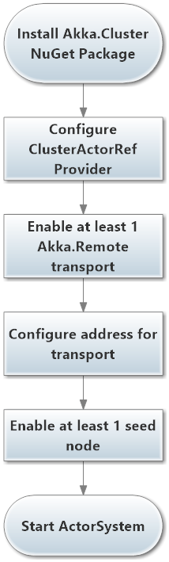
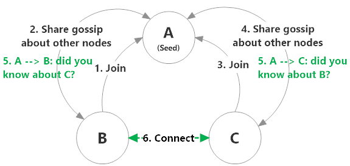
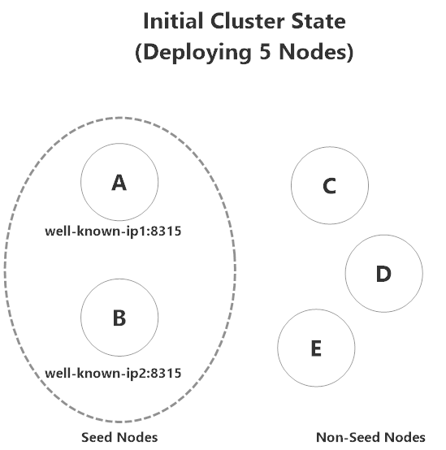
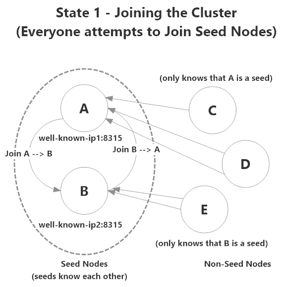
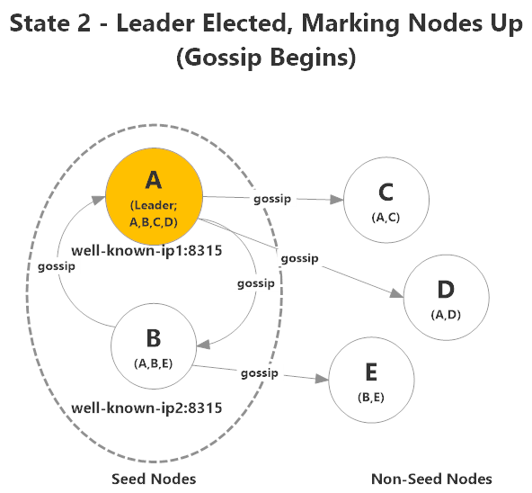
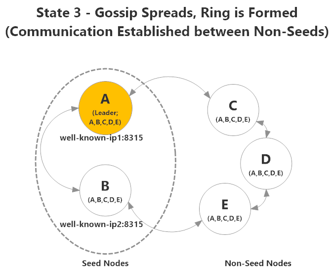

Akka.Cluster Overview
What is a "Cluster"?
A cluster represents a fault-tolerant, elastic, decentralized peer-to-peer network of Akka.NET applications with no single point of failure or bottleneck. Akka.Cluster is the module that gives you the ability to create these applications.
What Does Akka.Cluster Do?
The best way to begin introducing Akka.Cluster is with brief overview of what it does. Akka.Cluster is the package that brings clustering support to Akka.NET, and it accomplishes this by adding the following capabilities to Akka.NET:
- Makes it easy to create peer-to-peer networks of Akka.NET applications
- Allows peers to automatically discover new nodes and removed dead ones automatically with no configuration changes
- Allows user-defined classes to subscribe to notifications about changes in the availability of nodes in the cluster
- Introduces the concept of "roles" to distinguish different Akka.NET applications within a cluster; and
- Allows you to create clustered routers, which are an extension of the built-in Akka.NET routers, except that clustered routers automatically adjust their routees list based on node availability.
Benefits of Akka.Cluster
In short, these are the benefits of a properly designed cluster:
- Fault-tolerant: clusters recover from failures (especially network partitions) elegantly.
- Elastic: clusters are inherently elastic, and can scale up/down as needed.
- Decentralized: it's possible to have multiple equal replicas of a given microservice or piece of application state running simultaneously throughout a cluster
- Peer-to-peer: New nodes can contact existing peers, be notified about other peers, and fully integrate themselves into the network without any configuration changes.
- No single point of failure/bottleneck: multiple nodes are able to service requests, increasing throughput and fault-tolerance.
How is Clustering Different From Remoting?
Akka.Cluster is a layer of abstraction on top of Akka.Remote, that puts Remoting to use for a specific structure: clusters of applications. Under the hood, Akka.Remote powers Akka.Cluster, so anything you could do with Akka.Remote is also supported by Akka.Cluster.
Generally, Akka.Remote serves as plumbing for Akka.Cluster and other "high availability" modules within Akka.NET. You would generally only use Akka.Remote by itself in scenarios that don't require the elasticity and fault-tolerance needs that Akka.Cluster provides.
Essentially, Akka.Cluster extends Akka.Remote to provide the basis of scalable applications.
Use Cases
Akka.Cluster lends itself naturally to high-availability scenarios.
To put it bluntly, you should use clustering in any scenario where you have some or all of the following conditions:
- A sizable traffic load
- Non-trivial to perform
- An expectation of fast response times
- The need for elastic scaling (e.g. bursty workloads)
- A microservices architecture
Some of the use cases where Akka.Cluster emerges as a natural fit are in:
- Analytics
- Marketing Automation
- Multiplayer Games
- Devices Tracking / Internet of Things
- Alerting & Monitoring Systems
- Recommendation Engines
- Dynamic Pricing
- ...and many more!
Key Terms
Akka.Cluster is concept-heavy, so let's clarify a few terms:
- Node: a logical member of a cluster.
- Cluster: a set of nodes joined through the membership service. Multiple Akka.NET applications can be a part of a single cluster.
- Gossip: underlying messages powering the cluster itself.
- Leader: single node within the cluster who adds/removes nodes from the cluster.
- Role: a named responsibility or application within the cluster. A cluster can have multiple Akka.NET applications in it, each with its own role. A node may exist in 0+ roles simultaneously.
- Convergence: when a quorum (simple majority) of gossip messages agree on a change in state of a cluster member.
Enabling Akka.Cluster
Now that we've gone over some of the concepts and distributed programming concerns behind Akka.Cluster's design, let's focus on how to actually use it inside our own Akka.NET applications.

The first step towards using Akka.Cluster is to install the Akka.Cluster NuGet package, which you can do inside the Package Manager Console in Visual Studio:
PM> Install-Package Akka.Cluster
Once you've installed Akka.Cluster, we need to update our HOCON configuration to turn on the ClusterActorRefProvider, configure an Akka.Remote transport, and enable at least 1 seed node.
NOTE: Akka.Cluster depends on Akka.Remote.
Seed Node Configuration
akka {
actor.provider = "Akka.Cluster.ClusterActorRefProvider, Akka.Cluster"
remote {
helios.tcp {
port = 8081
hostname = localhost
}
}
cluster {
seed-nodes = ["akka.tcp://ClusterSystem@localhost:8081"]
}
}
In this instance, we're configuring this node to act as a seed node to the cluster, so it uses its own Akka.NET Address inside the cluster.seed-nodes property.
You can, and should, specify multiple seed nodes inside this field - and seed nodes should refer to themselves.
Note: if you're using dedicated seed nodes (such as Lighthouse), you should run at least 2 or 3. If you only have one seed node and that machine crashes, the cluster will continue operating but no new members can join the cluster!
Non-Seed Node Configuration
akka {
actor.provider = "Akka.Cluster.ClusterActorRefProvider, Akka.Cluster"
remote {
helios.tcp {
port = 0 #let os pick random port
hostname = localhost
}
}
cluster {
seed-nodes = ["akka.tcp://ClusterSystem@localhost:8081"]
}
}
In this case, we've created a non-seed node - it binds its Akka.Remote transport to a random port assigned by the operating system, but it connects to the seed node we assigned in the previous section.
Note: All nodes in an Akka.NET cluster must have the same ActorSystem name.
This is important! Even if you're running multiple separate Akka.NET applications inside a single Akka.NET cluster, they must all share the same ActorSystem name - otherwise they will not be permitted to join the cluster.
Cluster Gossip
This is the most important concept within Akka.Cluster. This is how nodes are able to join and leave clusters without any configuration changes.
"Gossip" is the ongoing flow of messages that are passed between nodes in a cluster, updating cluster members of the state of each member of the cluster.
When a node wants to join a cluster, it must first contact one of its configured seed nodes. Once the node has been able to connect to one seed node, it will begin receiving gossip messages containing information about other members of the cluster.

So in the example above:
- B contacts its configured seed node A and requests to join the cluster.
- A marks B as up and begins to share gossip information with B about other nodes in the cluster, but there aren't any other nodes connected at the moment.
- C contacts A and requests to join the cluster.
- A welcomes C to the cluster and begins sharing gossip information with node C.
- B and C are both notified about each other by node A.
- B and C connect to each other and establish communication.
Gossip messages will occur regularly over time whenever there is any change in the status of a member of the cluster, such as when a node joins the cluster, leaves the cluster, becomes unreachable by other nodes, etc.
Generally, you will not interact with gossip messages at the application level. But you do need to be aware of them and know that they power the cluster. To learn more about gossip and event types, see "Working With Cluster Gossip."
Nodes
A node is a logical member of a cluster. A node is defined by the address at which it is reachable (hostname:port tuple). Because of this, more than one node can exist simultaneously on a given machine.
Seed Nodes
A seed node is a well-known contact point that a new node must contact in order to join the cluster. Seed nodes function as the service-discovery mechanism of Akka.Cluster.
Lighthouse is a pre-built, dedicated seed node tool that you can use. It's extremely lightweight and only needs to be upgraded when Akka.Cluster itself is upgraded. If you're hosted on a platform like Azure or AWS, you can also tap into the platform-specific APIs to accomplish the same effect.
How a Cluster Forms
This is what the process of a node joining the cluster looks like:
Clusters initially consist of two distinct parts:
- Seed nodes - nodes that reside at well-known locations on the network and
- Non-seed nodes - nodes whose initial locations are unknown, and these nodes contact seed nodes in order to form the cluster.
We can picture the initial state of a 5-node Akka.NET cluster to look like this:

A and B are both seed nodes, and listen on IP address / port combinations that are baked into the configurations of C, D, and E.
A and B also know each other's locations, so they can communicate with each other initially also.
NOTE: A special rule applies the first time a cluster forms: the first seed node declared in a
akka.cluster.seed-nodeslist must be up. Otherwise the cluster will not form. This is designed to prevent a split brain from forming the first time a cluster launches. And in general, as a best practice: always use an identical seed node list on every node, including the seed nodes. This will give you the most consistent behavior and results.

All nodes initially attempt to connect to a seed node - in this instance the nodes are configured in the following way:
- E knows how to contact B;
- C and D know how to contact A; and
- A and B know how to contact each other.

During the process of initial contact within the cluster, a leader will be elected. In this case node A is elected to be the leader of the cluster.
A will begin marking nodes as up, beginning with the nodes it knows about: A,B,C, and D. A does not know about node E yet, so it's not marked as up.
Gossip information about the membership of the cluster will begin to spread to all nodes, and the nodes will all begin to connect to each other to form a mesh network.

After the gossip has had a chance to propagate across all nodes and the leader has marked everyone as up, every node will be connected to every other node and the cluster will have formed. Every node can now participate in any user-defined cluster operations.
Leader Election
The cluster leader is chosen by a leader election algorithm that randomly picks a leader from the available set of nodes when the cluster forms. Usually, the leader is one of the seed nodes.
Cluster vs. Role Leader
Each role within the cluster also has a leader, just for that role. Its primary responsibility is enforcing a minimum number of "up" members within the role (if specified in the cluster config).
Reachability
Nodes send each other heartbeats on an ongoing basis. If a node misses enough heartbeats, this will trigger unreachable gossip messages from its peers.
If the gossip from a quorum of cluster nodes agree that the node is unreachable ("convergence"), the leader will mark it as down and begin removing the node from the cluster.
Location Transparency
Location transparency is the underlying principle powering all of Akka.Remote and Akka.Cluster. The key point is that in a cluster, it's entirely possible that the actors you interface with to do work can be living on any node in the cluster... and you don't have to worry about which one.
Additional Resources
- How to Create Scalable Clustered Akka.NET Apps Using Akka.Cluster
- Video: Introduction to Akka.Cluster
- Gossip Protocol
- High-availability scenarios
- Microservices